匯東華統計顧問有限公司
匯東華統計顧問有限公司
"匯東華-認真作好每件事"
~統計，不再是阻力，而是助力~
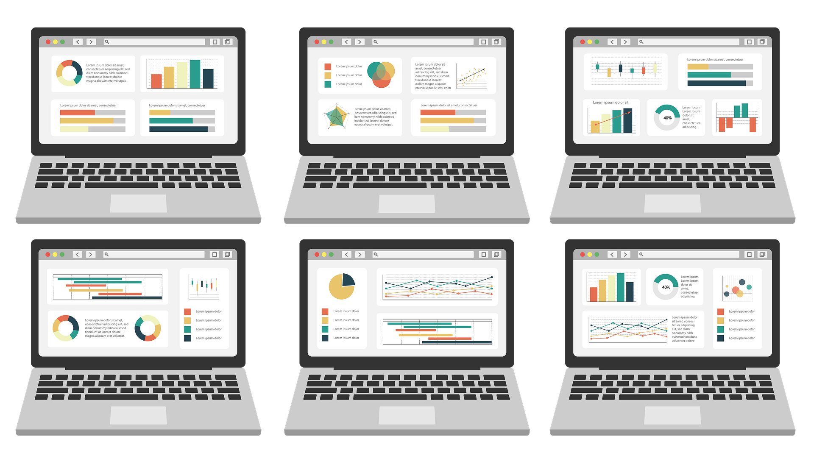
誤差線圖製作
功能：
在數據資料中，常會以柱形圖或折線圖來代表該筆資料的平均數等，為呈現結果的潛在誤差，即可加上誤差線，用以展示資料的不確定性程度，在專業報告或投稿時，常會使用。
特色：
除了柱條圖等的製作外，另可標示出誤差線，呈現樣本資料的波動。
說明：
第一：樣本平均值的波動範圍，即95% 信賴區間、標準差可呈現平均值的波動。
第二：如果希望體現資料抽樣誤差，此時應該使用標準誤。
第三：匯東華提供A版、B版、C版三種版型，一套三式。如下方示例圖。
第四：交付項目每套之三種A、B、C圖形+數值之EXCEL檔。
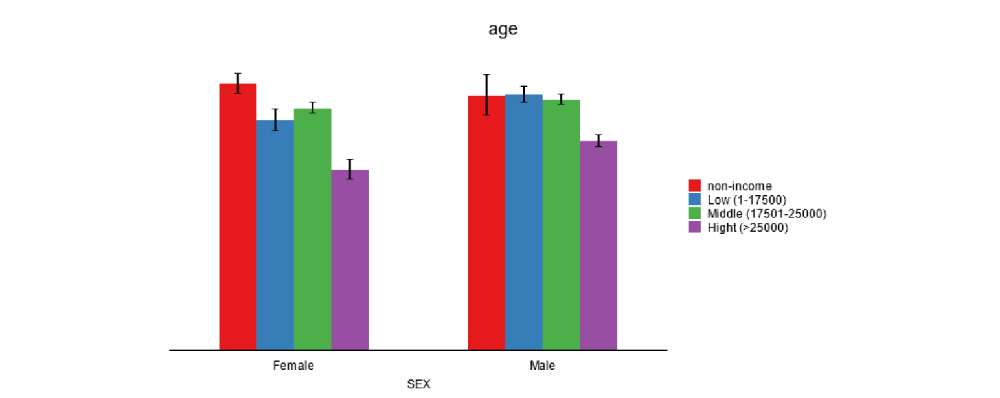
A版
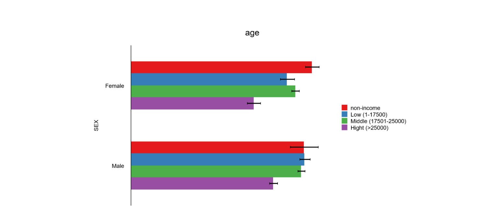
B版
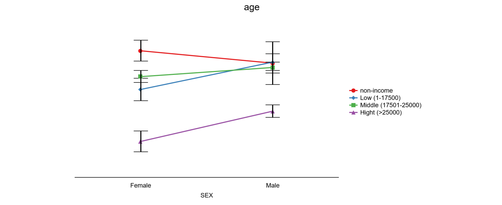
C版示例圖說明：探討不同性別、不同收入，個案平均年齡的分佈。
結果：(1)女性無收入者平均年齡為72.4歲；男性為69.23歲。
(2)72.4歲的95%CI=69.72-75.09；69.23歲的95%CI=63.72-74.74，差距越大，波動越大。
其它：波動範圍可用95%CI、標準差、標準誤，須事先說明需求。
服務費用：
1. 一套三式。定價900元。交付資料時，請說明：
(1)X變數（類別）：1~2個。
(2)Y變數（連續）：1個。
(3)需要呈現之誤差線為何（95%CI或標準差或標準誤）。
2. 若需要更多X變數與Y變數製圖，第二套及之後，每套加450元。
欲瞭解更多資訊歡迎洽詢匯東華。
洽詢管道
Line官方帳號ID：@medatatw
臉書私訊小編
07-9721586 轉分機9或1由專人為您服務
請點右下角訊息圖示
填寫洽詢表單
數據串接與清洗
數據是礦藏，數據清洗是挖出鑽石的第一步，尤其是巨量知識。數據清洗或串接執行過程需要細心與專注，且有可能會消耗許多時間和精力，就由我們來替各位處理掉這個大麻煩。
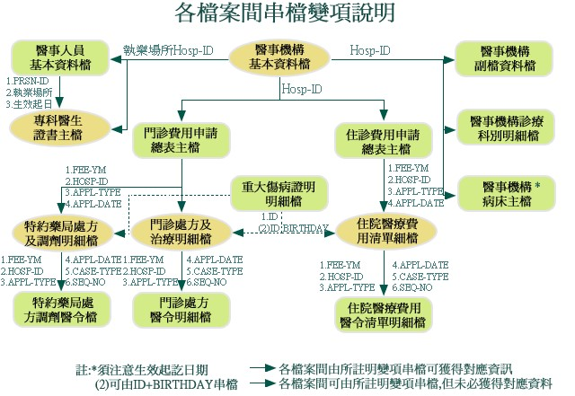
全民健保研究資料庫、國外大型資料庫資料非常齊全，種類多，需要串接與清洗，進行正規化後才能更進一步進行資料探勘與統計分析。
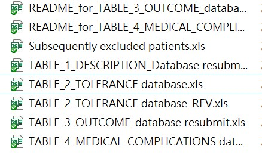
Fig1.同一個Project資料散落在不同tables，無法使用
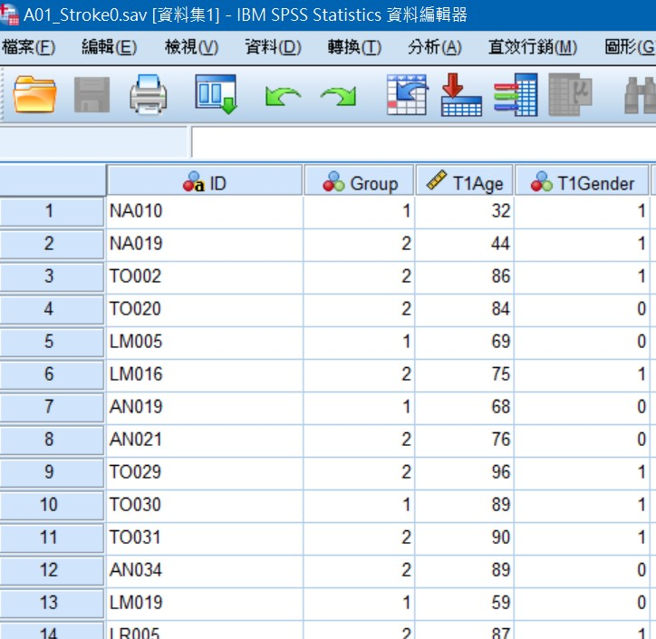
Fig2.整併與清理為可分析的table
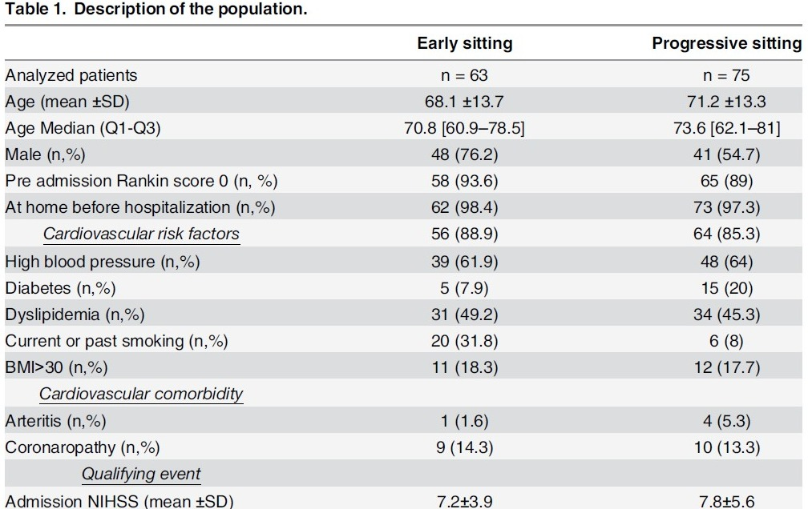
Fig.3整理和分析後形成有意義的知識
概念與流程示意圖
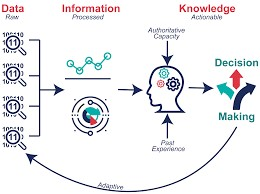
教育培訓
課程規劃核心為以「學習者」為中心進行「傳承」
以學習者為中心，結合陳秀敏博士十多年來的統計實務以及教學經驗，設計適合學員學習方式，開設課程，達到有效學習。
開設線上統計學院
SPSS基礎統計實戰班：第一次分析SCI研究就上手(上、下)
課程網址：https://medata.teaches.cc/
課程介紹1：https://www.youtube.com/watch?v=MPz2wqN0v2M
課程介紹2：https://www.youtube.com/watch?v=nd5A5duxO5E
臨床研究思維-Open your mind
課程網址：https://medata.teaches.cc/
課程介紹1：https://www.youtube.com/watch?v=yTHdBnCdSnY
課程介紹2 : https://www.youtube.com/watch?v=kE9tXraICqk
計畫撰寫與統計諮詢
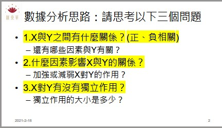
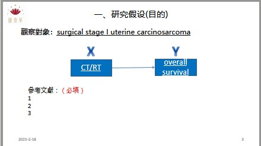
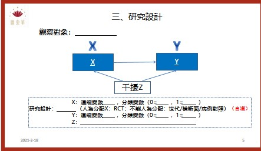
為了讓匯東華的顧客與學員有更好的合作和消費體驗，故匯東華特別依據營業項目開發周邊產品，提供使用、購買。目前已有針對公共衛生師的題庫以及模擬試題，未來將針對醫學研究領域發展產品。